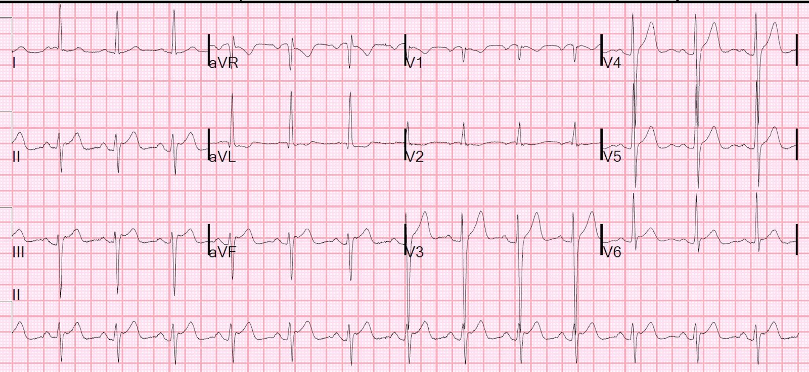
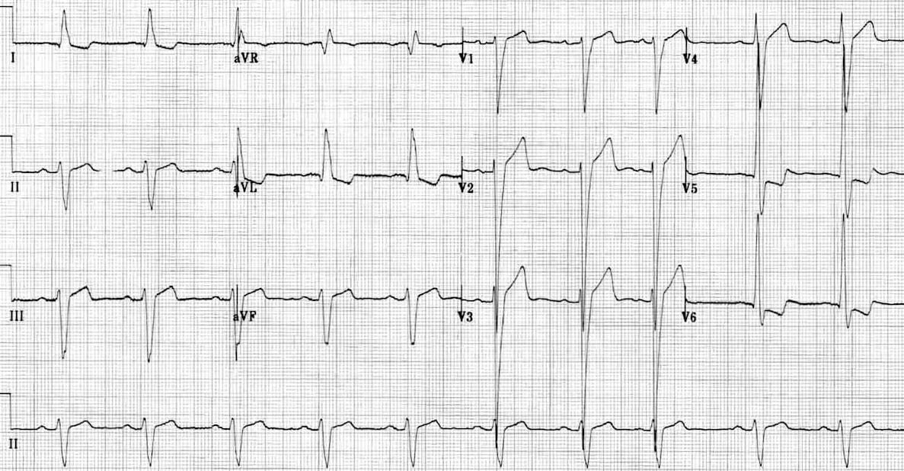
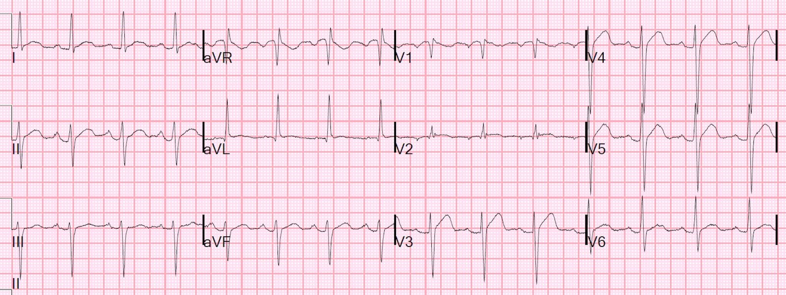
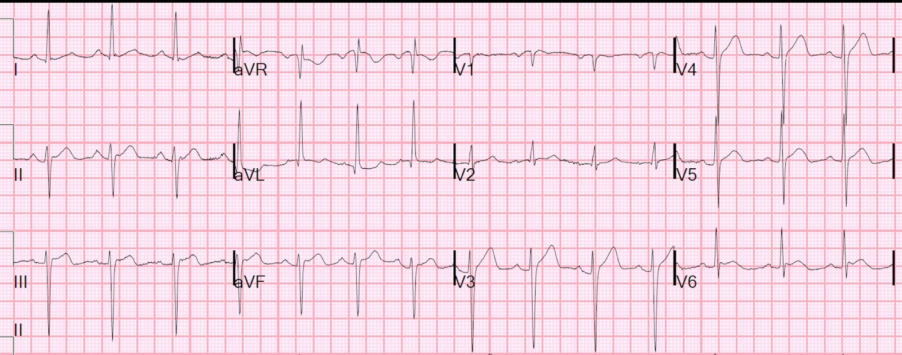
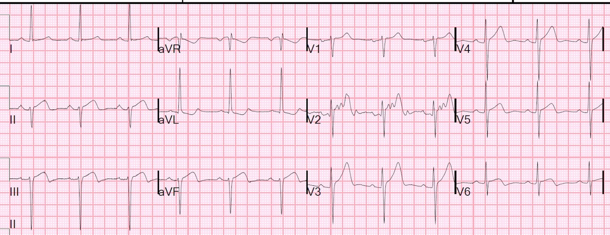
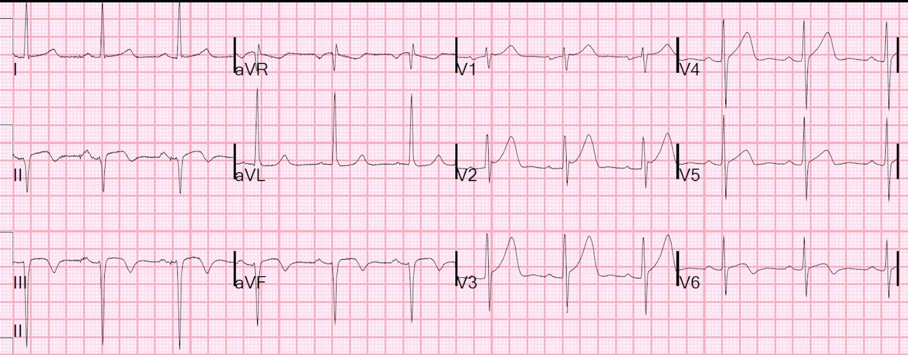
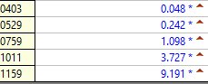
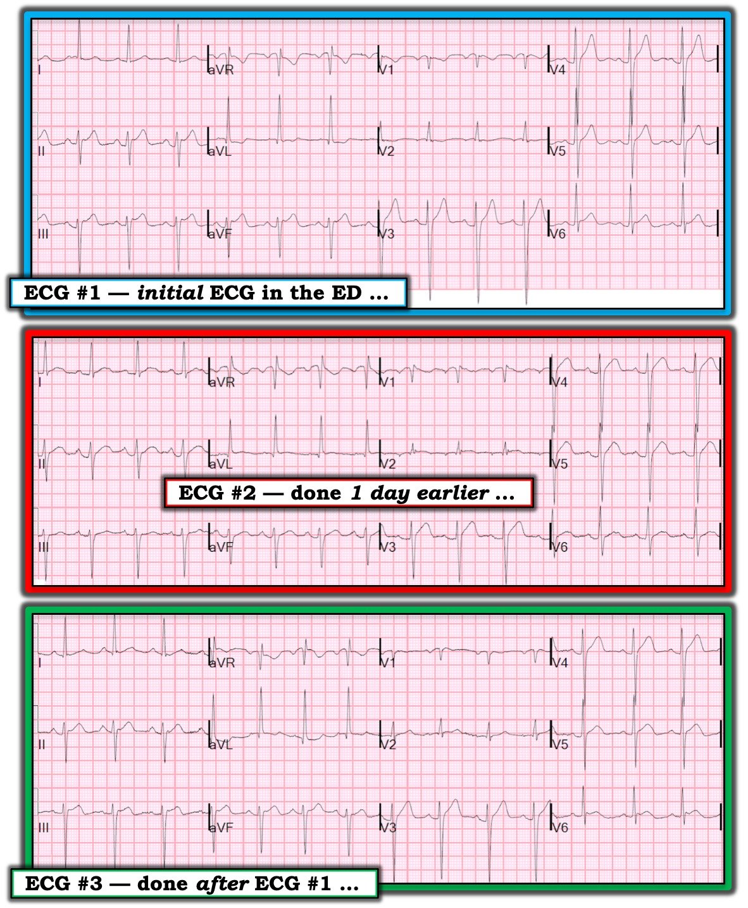

19/05/2019 — LVH với các bất thường tái cực như dự kiến, hay OMI cấp?
Bản dịch tiếng Việt của bài "LVH with expected repolarization abnormalities, or acute OMI?" – Dr. Smith’s ECG Blog. Giữ nguyên toàn bộ 10 hình ảnh của bản gốc.
Một bệnh nhân đái tháo đường (DM) đến viện vì đau ngực cấp.
Đây là điện tâm đồ của anh ấy tại khoa cấp cứu (ED):


Bình luận
Theo tôi, ST chênh lên ở thành dưới là không tương xứng (vượt quá tỷ lệ) so với sóng S. Tuy nhiên, đây là một ý kiến chủ quan, vì tôi không có quy tắc nào dựa trên dữ liệu. Nếu đo, STE là 2,5-3,0 mm tại điểm J, so với điểm nối PQ. Với biên độ sóng S là 17 mm, tỷ số này là 14,6 – 17,6 %. Dù không có dữ liệu nghiên cứu chính thức nào ủng hộ ý kiến của mình, tôi vẫn chủ trương rằng, trong LVH, tỷ số lớn hơn 15% là bất thường và rất đáng nghi ngờ STEMI. (Bài báo của Armstrong chủ trương ngưỡng 25% ở V1-V3 cho nhồi máu thành trước có sai sót nghiêm trọng và không nên được sử dụng — xem bình luận của tôi ở cuối trang và bài viết liên quan).
Đây là một ví dụ tuyệt vời về LVH ở chuyển đạo chi kèm giả STEMI (PseudoSTEMI) thành dưới. (Cảm ơn Life in the Fast Lane về ca này).


Tỷ số ở III là 1 mm chia cho 17 mm. = 6%. Mức này là bình thường.
Điều quan trọng cần nhớ là các bệnh cảnh sau đây có thể có STE ở III kèm STD soi gương ở aVL khi không có nhồi máu cơ tim cấp:
LVH
Phình thất trái (LV Aneurysm)
LBBB
WPW
Vì lý do này, chúng tôi đã loại trừ tất cả các loại điện tâm đồ này trong nghiên cứu của mình, nghiên cứu cho thấy STE ở III kèm STD soi gương ở aVL có độ nhạy và độ đặc hiệu rất cao đối với nhồi máu cơ tim thành dưới: ST depression in lead aVL differentiates inferior ST-elevation myocardial infarction from pericarditis (ST chênh xuống ở chuyển đạo aVL giúp phân biệt nhồi máu cơ tim ST chênh lên thành dưới với viêm màng ngoài tim)
Ca bệnh tiếp diễn:
Trong ca này, có một điện tâm đồ đã được ghi vào ngày hôm trước, khi bệnh nhân đến viện vì tăng đường huyết.


Điều này chứng minh rằng STE thấy trên điện tâm đồ đầu tiên đúng là mới xuất hiện và do thiếu máu cục bộ.
Điện tâm đồ thứ 2 tại khoa cấp cứu:


Phòng thông tim (cath lab) đã được kích hoạt.
Troponin lần đầu trả về là 0,048 ng/mL (giới hạn trên tham chiếu (URL) là 0,030), gợi ý đây là dương tính thật. Các giá trị troponin trước đó đều dưới 0,010 ng/mL (không phát hiện được)
Creatinin (Cr) là 3,0, với GFR khá thấp. Vì vậy, bác sĩ can thiệp đã nghiêng về việc chỉ điều trị nội khoa, để không làm tổn thương thận thêm. Mặc dù thuốc cản quang dùng cho chụp CT có lẽ gây ít hoặc không gây tổn thương cho thận có GFR thấp, chụp mạch, đặc biệt là khi kèm PCI, dùng nhiều thuốc cản quang hơn hẳn và thực sự có thể làm tổn thương thận.
Kết quả
Chụp mạch vành cho thấy RCA bị hẹp với dòng chảy TIMI III và có lẽ có mảng xơ vữa bị nứt vỡ, nhưng không chắc chắn. RCA có một số nhánh sau-bên. Chiến lược xử trí tốt nhất còn lâu mới rõ ràng. Người ta muốn tránh dùng quá nhiều thuốc cản quang vì lo ngại suy thận. Điều trị nội khoa đã được cân nhắc.
Cuối cùng, can thiệp đã được tiến hành và xảy ra một biến chứng: hoặc bóc tách, hoặc hình thành huyết khối tại stent, với dòng chảy giảm xuống TIMI-1. Đã tiến hành can thiệp thêm và dùng eptifibatide (một thuốc ức chế GP IIb-IIIa) để khắc phục.
Đây là điện tâm đồ sau đặt stent:


Sóng T ở V2 và V3 lớn hơn hẳn, cho thấy tái tưới máu thành sau.
Creatinin tăng lên 4,1 mg/dL.
Đây là một điện tâm đồ khác ghi muộn hơn một chút


Diễn biến troponin


Siêu âm tim:
Rối loạn vận động thành liên quan đến thành dưới và một phần vùng dưới-vách, phù hợp với ổ nhồi máu ở vùng chi phối của nhánh PDA thuộc RCA. Một mặt cắt gợi ý có thêm giảm động thành dưới-bên, nhưng điều này kém thuyết phục hơn.
Đây là một ca khác rất thú vị về nhồi máu cơ tim thành dưới trên nền LVH, trong đó bác sĩ can thiệp đã quy ST chênh lên là do LVH
ST changes due to limb lead LVH? (Thay đổi ST do LVH ở chuyển đạo chi?)
Đây là một bài viết rất chi tiết về chủ đề giả STEMI do LVH so với STEMI, kèm một ca bệnh tuyệt vời.
LVH with anterior ST Elevation. When is it anterior STEMI? (LVH kèm ST chênh lên thành trước. Khi nào là STEMI thành trước?)
Đây là một phần bàn luận trong bài viết đó:
Có quy tắc “Sgarbossa cải biên theo Smith” nào cho ST chênh lên trong LVH không?
Tương tự như STE thành trước gặp trong LBBB, mức độ STE ở các chuyển đạo V1-V3 của bệnh nhân LVH nhìn chung tương xứng với độ sâu của sóng S đi trước. Trong trường hợp LBBB, người ta đã chứng minh rằng STE vượt quá 25% độ sâu sóng S đi trước là cao không tương xứng, và xác định được tắc mạch vành cấp (ACO) với độ đặc hiệu rất tốt.9 Liệu điều này có áp dụng được cho LVH không?
Một phân tích hồi cứu của Armstrong và cs. gợi ý rằng, trong LVH, STE ở V1-V3 vượt quá 25% phức bộ QRS đi trước có thể là một cách chính xác để loại trừ ACO, và khá nhạy để xác định ACO.
Bình luận của Smith: Bài báo của Armstrong không có phương pháp phù hợp để nghiên cứu vấn đề này. Phương pháp phù hợp là lấy các điện tâm đồ liên tiếp có điện thế cao và ST chênh lên ở chính các chuyển đạo có ST chênh lên, chia chúng thành nhóm có và không có tắc LAD, rồi xem tỷ số ST/S khác nhau như thế nào. Tôi đã chèn ở cuối bài này một số ví dụ từ bài báo của Armstrong. Bạn sẽ thấy đó không phải là những ca khiến bạn gặp khó khăn. Tôi đã hai lần cố gắng nghiên cứu chủ đề này và thất bại vì có rất ít ca vừa có điện thế cao ở V1-V4 vừa có tắc LAD. Thực tế, ngay cả ca này cũng không phù hợp, vì điện thế ở các chuyển đạo bị ảnh hưởng không đạt tiêu chuẩn LVH!
Quan trọng nhất, vì STE trong LVH hiếm khi cao quá 4 mm, tiêu chuẩn 25% nhiều khả năng là kém nhạy quá mức. Ví dụ, ở một bệnh nhân có sóng S sâu 30 mm, STE sẽ phải vượt quá gần 7 mm.

===================================
Bình luận của KEN GRAUER, MD (19/5/2019):
===================================
Tôi thấy đây là một ca khó — theo tôi, ca này minh họa việc cố gắng đánh giá các bản ghi liên tiếp để tìm dấu hiệu tinh tế của thiếu máu cục bộ cấp có thể khó khăn đến mức nào ở những bệnh nhân vừa có LVH vừa có biến đổi nhẹ về hình thái QRST giữa bản ghi này với bản ghi khác.
- Tôi giới hạn bình luận của mình ở 3 bản ghi đầu tiên của bệnh nhân này — để cho rõ ràng, tôi đã ghép chúng lại trong Hình 1.
- Điều MẤU CHỐT để so sánh các bản ghi liên tiếp — là nhận ra mọi khác biệt có thể có về hình thái QRS và ST-T giữa bản ghi này với bản ghi kế tiếp — rồi cố gắng xác định xem những khác biệt đó có phải do một thay đổi cấp tính hay không — hay có thể do các yếu tố khác (tức là trục mặt phẳng trán thay đổi; vị trí đặt điện cực thay đổi; hoặc những khác biệt không do thiếu máu cục bộ khác, khó xác định và khó định lượng). Như Dr. Smith đã nói — phải thừa nhận một phần của việc đánh giá này là chủ quan khi không có tham chiếu chắc chắn tới một quy tắc dựa trên dữ liệu.
- Cách tôi ưa dùng khi đánh giá các bản ghi liên tiếp của một bệnh nhân — là bắt đầu bằng việc đọc đầy đủ, có hệ thống một bản ghi bất kỳ nào đó trong nhóm. Sau đó tôi so sánh từng chuyển đạo với từng bản ghi còn lại trong nhóm.


=================
Suy nghĩ của tôi về điện tâm đồ #1:
- Tôi nghĩ hợp lý nhất trong ca này là bắt đầu với điện tâm đồ ban đầu ghi tại khoa cấp cứu ở bệnh nhân đái tháo đường này, người bị đau ngực mới khởi phát . Có nhịp xoang khá đều với tần số ~80-85 lần/phút. Tất cả các khoảng (PR, QRS, QTc) có vẻ có thời gian bình thường.
- Trục — Trục mặt phẳng trán ở điện tâm đồ #1 lệch trái đáng kể (khoảng -40 độ) — phù hợp với LAHB.
- Lớn các buồng tim — Sóng P ở chuyển đạo V1 có một thành phần âm sâu. Điều này có thể phù hợp với LAA (bất thường nhĩ trái — Left Atrial Abnormality). Biên độ QRS ở điện tâm đồ #1 tăng rất mạnh — đáp ứng tiêu chuẩn điện thế của LVH theo: i) các dấu hiệu ở chuyển đạo aVL (R ≥12mm ở aVL); ii) theo tiêu chuẩn Cornell (tổng R ở aVL + S ở V3 ≥20mm [nữ] hoặc ≥28mm [nam] ) — và, iii) theo tiêu chuẩn Peguero (S sâu nhất ở bất kỳ chuyển đạo ngực nào + S ở V4 ≥23mm [nữ] hoặc 28mm [nam] ). Hình ảnh ST-T ở chuyển đạo aVL phù hợp với ít nhất là một hình ảnh “tương đương tăng gánh” (strain equivalent). (Để biết chi tiết về “Quan điểm của tôi” trong đánh giá LVH trên điện tâm đồ — BẤM VÀO ĐÂY và VÀO ĐÂY).
Q–R–S–T — Các thay đổi ở điện tâm đồ #1:
- Sóng Q — Thấy một sóng q vách nhỏ và hẹp ở chuyển đạo aVL.
- Tăng tiến sóng R — Chuyển đạo aVL [người dịch: nguyên văn ghi “aVL”, theo mạch văn nhiều khả năng là lỗi đánh máy của “V2”] trông “lạc chỗ”. Rất bất thường khi một phức bộ âm hoàn toàn ở chuyển đạo V1 — lại được nối tiếp ngay bằng một phức bộ gần như dương hoàn toàn ở chuyển đạo V2 — rồi lại quay về phức bộ QRS chủ yếu âm ở chuyển đạo V3. Tôi nghi có một sự cố kỹ thuật nào đó (có lẽ đặt sai vị trí điện cực) giải thích cho trình tự tăng tiến sóng R bất thường này.
- ST-T — Rõ ràng có ST chênh lên tại điểm J ~2mm ở mỗi chuyển đạo trong 3 chuyển đạo dưới — dù đi kèm với đoạn ST dạng lõm hướng lên ( = hình dạng “mặt cười”). Ở những chỗ khác, ST-T có vẻ dẹt ở chuyển đạo aVL và V2. Sóng T đảo ngược ở chuyển đạo V1 không nhất thiết là bất thường — và ST-T ở các chuyển đạo V3 đến V6 có vẻ không bất thường khi xét đến biên độ QRS tăng.
BÌNH LUẬN — Với tư cách là một bản ghi ban đầu đơn lẻ ở bệnh nhân đau ngực mới khởi phát này — tôi hoàn toàn không chắc chắn về ý nghĩa lâm sàng của các dấu hiệu điện tâm đồ mà tôi vừa nêu cho điện tâm đồ #1:
- Tôi nghĩ bản ghi có vấn đề kỹ thuật (tức là chuyển đạo V2 trông lạc chỗ) — và điều này rõ ràng có thể ảnh hưởng đến việc đánh giá hình ảnh các chuyển đạo ngực.
- Biên độ QRS tăng rất mạnh (sóng S ~30 mm ở V3 + chồng lấn nhiều với sóng S ở V4 và sóng R ở V5) — và hình ảnh ST-T ở chuyển đạo aVL phù hợp với hình ảnh “tương đương tăng gánh” — vì vậy bệnh nhân này có LVH rõ rệt.
- Tôi có thấy ST chênh lên 2mm tại điểm J ở mỗi chuyển đạo dưới — nhưng tôi nghĩ ( = ý kiến của tôi) rằng hình dạng của ST-T ở thành dưới không nhất thiết là bất thường khi có LVH rõ rệt — và việc thiếu bằng chứng rõ ràng về tổn thương thành sau cấp (hay nói cho cùng, thiếu bằng chứng rõ ràng về tổn thương ở bất kỳ chuyển đạo nào trong 9 chuyển đạo còn lại) khiến tôi không chắc chắn liệu điện tâm đồ #1 có phản ánh điều gì khác ngoài LVH rõ rệt + LAHB hay không. Tôi cảm thấy không thể đưa ra kết luận …
=================
Suy nghĩ của tôi về điện tâm đồ #2:
- Tôi thấy điện tâm đồ #2 (ghi vào ngày hôm trước, khi bệnh nhân đến viện vì tăng đường huyết) — gây rối hơn là làm sáng tỏ ( = ý kiến của tôi).
- Hình thái QRS ở các chuyển đạo chi gần như giống hệt (tức là trục lệch trái rõ kèm LAHB). Tuy nhiên, có một số thay đổi về hình ảnh các chuyển đạo ngực: i) Vùng chuyển tiếp xuất hiện muộn ở điện tâm đồ #2 (mãi đến giữa chuyển đạo V5 và V6 mới xảy ra — trong khi sóng R đã trở nên chủ yếu dương ở giữa chuyển đạo V4 và V5 trên điện tâm đồ #1); và, ii) biên độ QRS ở điện tâm đồ #2 vẫn đáp ứng tiêu chuẩn điện thế của LVH — nhưng không mạnh bằng ở điện tâm đồ #1. Chú ý đến những khác biệt có thể có về hình thái QRS giữa các bản ghi được so sánh là quan trọng — vì sự thay đổi đáng kể của trục mặt phẳng trán và/hoặc thay đổi vị trí đặt điện cực ngực có thể đôi khi khiến rất khó biết liệu các khác biệt ST-T phản ánh thay đổi cấp tính hay thay đổi do vị trí. Tôi không nghĩ các khác biệt về hình thái QRS giữa điện tâm đồ #1 và điện tâm đồ #2 đủ để làm thay đổi đánh giá của tôi về các thay đổi ST-T.
- Khác biệt ST-T giữa điện tâm đồ #1 và điện tâm đồ #2 — ST chênh lên ở các chuyển đạo dưới thấy trên điện tâm đồ #1 rõ ràng là mới so với điện tâm đồ #2 ghi trước đó một ngày. Dù vậy — các đoạn ST rõ ràng có dạng vòm ở chuyển đạo II của điện tâm đồ #2; dạng vòm và hơi chênh lên ở chuyển đạo V2 — và có đoạn khởi đầu ST thẳng ở các chuyển đạo V3 đến V6 trên điện tâm đồ #2, mà theo tôi trông cấp tính hơn so với dạng lõm hướng lên có hình dạng lành tính hơn thấy ở chính các chuyển đạo này trên điện tâm đồ #1. Vì vậy, ở một số khía cạnh — hình ảnh ST-T trên điện tâm đồ #2 (ghi trước đó một ngày) trông đáng lo ngại hơn đối với tôi so với điện tâm đồ #1 ( = ý kiến của tôi).
=================
Suy nghĩ của tôi về điện tâm đồ #3:
- So sánh hình thái QRS ở điện tâm đồ #1 với điện tâm đồ #3 thấy khá giống nhau (khác biệt ở các chuyển đạo ngực chỉ là tối thiểu). Xem xét cả 12 chuyển đạo trên cả hai bản ghi — tôi không bị thuyết phục rằng có các thay đổi ST-T cấp tính đáng kể giữa 2 bản ghi ( = ý kiến của tôi).
=================
BÌNH LUẬN CUỐI CÙNG: Bản ghi thứ 4 và thứ 5 của bệnh nhân này (trình bày ở trên) — rõ ràng xác nhận diễn tiến của một biến cố cấp tính. Mục đích bàn luận của tôi chỉ là nhấn mạnh việc đánh giá các bản ghi liên tiếp có thể khó khăn đến mức nào — đặc biệt khi có LVH và những biến đổi nhỏ khác giữa bản ghi này với bản ghi kế tiếp. Chúng tôi xin CẢM ƠN Dr. Smith đã trình bày ca bệnh đầy thử thách này!
- T.B. (P.S.): Hóa ra cả 3 bản ghi trong Hình 1 đều cho thấy hình ảnh phức bộ QRS rất bất thường ở chuyển đạo V2. Cần lưu ý — tăng tiến sóng R qua các chuyển đạo ngực trông rất khác (và bình thường!) trên điện tâm đồ thứ 4 của bệnh nhân này ( = điện tâm đồ sau đặt stent) — và lại khác nữa trên điện tâm đồ thứ 5 (cuối cùng). Vì vậy — tôi tự hỏi tăng tiến sóng R thật sự sẽ trông như thế nào ở bệnh nhân này NẾU ghi điện tâm đồ với vị trí đặt điện cực ngực đã được xác nhận là đúng …